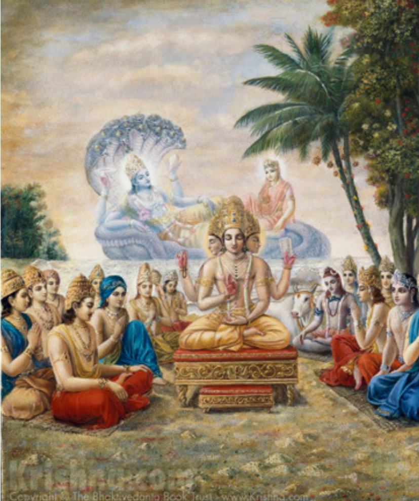
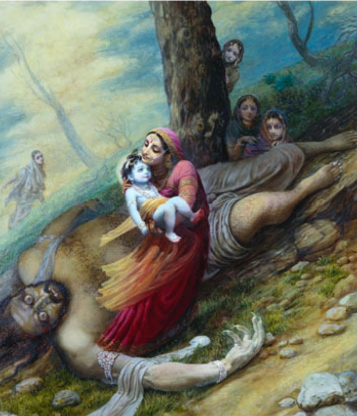
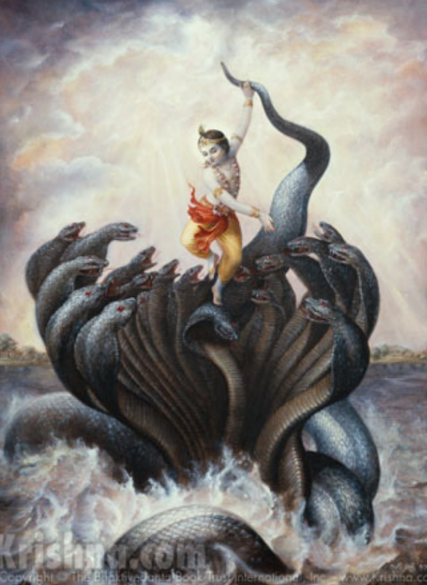
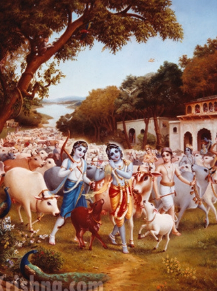

Advent of Shri Krishna chapter 1
Yashoda Dulal chapter 2
Balyalila chapter 3
Govinda chapter 4
Advent of Shri Krishna
Once when the entire world was
overburdened by the demons, demigods
prayed to Lord Vishnu for help.
Lord Vishnu informed them He would soon
appear as the son of Vasudeva and Devaki.
After the marriage of Vasudeva and Devaki,
while returning home on a chariot driven by
Kamsa, an ominous voice addressed Kamsa,
warning him that Devaki's eighth son would
kill him.
 Hearing the omens, Kamsa took up a
sword to kill Devaki.
Then, Vasudeva pacified Kamsa. Kamsa did
not kill Devaki but imprisoned both Vasudeva
and Devaki.
As foretold by the Lord, He entered the womb
of Mother Devaki and all the demigods came
to offer their prayers.
Lord Krishna took His birth as the eighth son
of Vasudeva and Devaki. He appeared in His
four-handed Vishnu form.
Vasudeva and Devaki offered their prayers to
Lord Krishna.
Then, the Lord ordered Vasudeva to take Him
to Gokula and exchange Him with the
daughter born to Mother Yashoda.
Yashoda Dulal
At that
time all the doorkeepers were in deep sleep
and the doors automatically opened.
Vasudeva carried Krishna to Gokula.
Lord Anantasesha spread His hoods to give
the Lord shelter.
Reaching Gokula, Vasudeva exchanged
Krishna with the daughter born to Mother
Yashoda and retured back to the prison in
Mathura.
Kamsa tried to kill the newborn child of
Mother Devaki, but the child rose above his
head and appeared as the eight-armed form
of Durga. Mother Durga then told Kamsa that
the Lord had taken birth somewhere else.
Hearing this, Kamsa ordered his men to kill
all children who were born within ten days.
In Gokula, Nanda Maharaja arranged for a
magnificent birth ceremony.

Fearing Kamsa, Nanda Maharaj secretly
performed the name giving ceremony of
Krishna and Balarama by Garga Muni.
Garga Muni said that the child would have
power, beauty, and opulence, all on the level
of Narayana, the Supreme Personality of
Godhead.
nanda ke ānanda bhāiyo jaya kanhaiyā lāl kī
jaya kanhaiyā lāl kī jaya kanhaiyā lāl kī
hathi dīnī ghoḍā dīnī ane dīnī pālakī
nanda ke ānanda bhāiyo jaya kanhaiyā lāl kī
javāneń ko hāthi ghoḍe buḍḍheń ko palki
nanda ke ānanda bhāiyo jaya kanhaiyā lāl kī
And Krishna became the darling of Vrindavan
because of His uncommon activities
Balyalila
Kamsa sent Putana demoness, who was
wandering here and there killing small
babies. Putana tried to feed Krishna her
poison smeared breast milk, but Krishna
sucked her life air and killed her.
Once when mother Yashoda put Krishna
underneath a household cart, Krishna kicked
the cart and killed the demon Shakatasura.
One day, Trinavarta, one of the servants of
Kamsa, appeared as a whirlwind and took
Krishna away.

Krishna grasped the demon by his neck so
tightly that the demon died immediately.
Once when baby Krishna yawned, mother
Yashoda could see within His mouth the
entire universal manifestation.
Krishna and Balarama would sometimes steal
butter from the gopis homes.
One day, Krishna having been interrupted in
His business of sucking the breast, became
very angry. He entered a room and began to
eat the freshly churned butter.
Govinda chapter
When Krishna and Balarama stole butter and
distributed the butter to the monkeys,
mother Yashoda chased them with a stick in
hand.
As soon as Krishna saw His mother, He
immediately ran away, and mother Yashoda
followed Him.
Krishna cried and rubbed His eyes again and
again with His two lotus hands. His eyes were
fearful,
Mother Yashoda caught Krishna and bound
Him to a grinding mortar.

Krishna crawled with the mortar in the
courtyard and pulled down the two yamalaarjuna trees, and delivered Nalakuvara and
Manigriva.
Nalakuvara and Manigriva were condemned
by Narada Muni to become trees.
One day, Krishna took some grain in His little
palms and went to the vendor to exchange
the grains for fruit. On the way, almost all the
grains fell from His palms, only one or two
grains remained. The fruit vendor, out of full
affection, accepted these grains in exchange
for as much fruit as Krishna could take. As
soon as she did this, her basket became filled
with gold and jewels.
Later, fearing the demons, the inhabitants of
Gokula left Gokula and went to Vrindavana.
There Krishna killed Vatsasura and Bakasura.